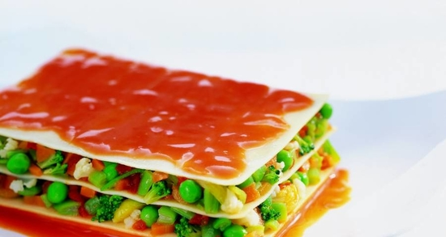

Lasaña de productos de la huerta
| Tiempo: 20-40' | Dificultad: Fácil | Personas: 4 | Tipo: Primer plato |
|---|
Ingredientes:
- 200 ml leche
- 1 bote sofrito tomate
- 2 zanahorias
- 200 g judias verdes
- 2 pimientos rojos
- 1 pimiento verde
- Aceite de oliva
- 1 pastilla de caldo de verduras
- 2 dientes ajo
- 2 cebollas
- 1 calabacín
- 1 berenjena
- Sal y pimienta
- Azúcar
- Láminas de lasaña
Pasos a seguir:
- Hidrata las placas de Lasaña Fácil El Pavo según la forma indicada en el envase.
- Mientras, corta a cuadraditos la cebolla, la zanahoria y los pimientos. Rehogarlos en una sartén con el aceite de oliva, a fuego lento, hasta que empiecen a dorarse.
- Pela y corta a taquitos la berenjena y el calabacín. Agrega a la sartén junto con la judía troceada y la pastilla de Avecrem Dúo Legumbres Estofadas. Añade medio vaso de agua y dejar cocer durante 10 min. a fuego lento. Retirar del fuego y reservar.
- Para la salsa: Pon un recipiente al fuego con un poco de aceite, los ajos cortados a rodajas, el Sofrito de Tomate y cebolla Gallina Blanca y una pizca de sal y azúcar. Deja cocer durante 10 min a fuego medio. Vierte la crema de leche y mézclalo. Reserva.
- Escurre las placas y móntalas en una fuente, intercalando las placas de Lasaña Fácil El Pavo con las verduras. Cubre la Lasaña Fácil El Pavo con la salsa y hornea 10 min. a 180º C. antes de servir.
